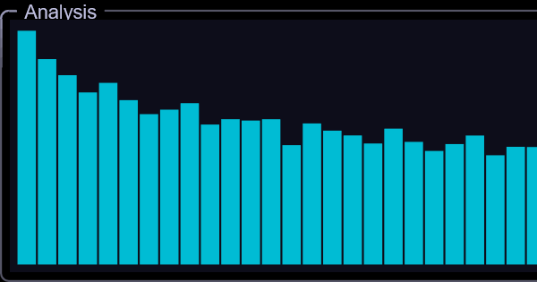
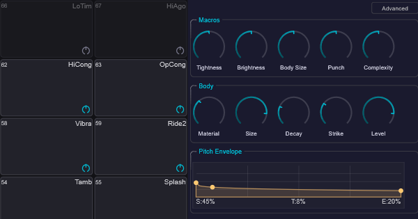
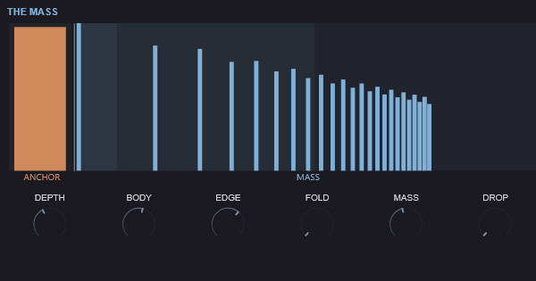
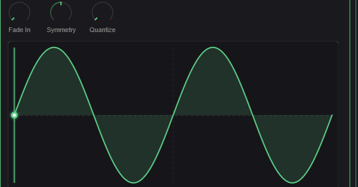
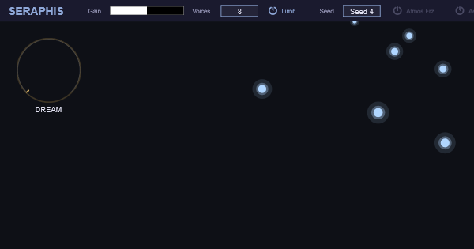
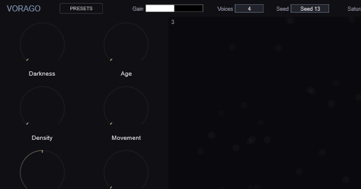
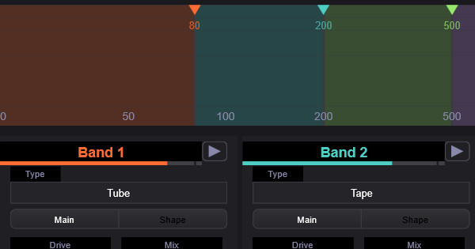
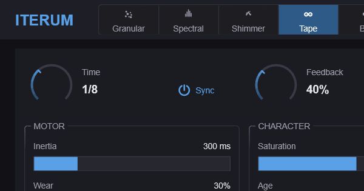
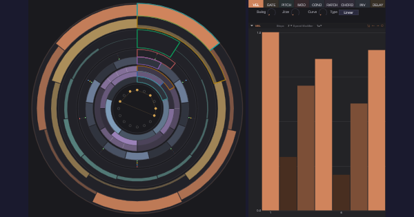

Krate Audio
Weird and noisy open-source VST3 plugins for music production and sound design
Every Krate Audio plugin is free and open source under the MIT licence: a VST3 for Windows, macOS and Linux, plus an Audio Unit on macOS. The full source of each one is on GitHub, and Krate Manager installs and updates them for you.
Krate Manager
Shows which Krate Audio plug-ins are installed and whether updates exist, installs, updates and removes them, and updates itself.
v1.0.1Supported systems
Windows 10 22H2 and Windows 11 x64; macOS 15 and later (Apple silicon and Intel); Linux x86_64 at the glibc of the ubuntu:22.04 build.
First launch
Windows
Krate Manager is not code-signed, so when you run its Windows setup, Windows shows "Windows protected your PC": click "More info", then "Run anyway". The plug-in installers Krate Manager downloads itself do not show this warning.
Windows 11 Smart App Control in enforcement mode blocks unsigned programs, Krate Manager and the plug-in installers included, so it is not supported: Krate Manager runs there only after Smart App Control is turned off.
A %LOCALAPPDATA% folder redirected outside the Windows user profiles folder is not supported: Krate Manager then refuses every install, update and removal that needs administrator rights, with the error E_HELPER_JOB_LOCATION.
macOS
Written from the recorded checks; see the release notes until then.
Linux
On Linux, Krate Manager comes as an AppImage, which updates itself, and as a .deb package, which does not: to update a .deb install, download the new .deb from the release page and install it.
On Linux, Krate Manager installs plug-ins to ~/.vst3 unless you choose another folder in Settings, and factory presets to ~/Documents/Krate Audio, one folder per plug-in.
REAPER on Linux may not scan ~/.vst3: add ~/.vst3 to REAPER's VST path list in Preferences > Plug-ins > VST > Edit path list, then rescan.
If the Krate Manager window is blank or flickers (seen with NVIDIA graphics), turn on "Work around a blank or flickering window (NVIDIA)" in Settings: it sets WEBKIT_DISABLE_DMABUF_RENDERER=1 the next time Krate Manager starts, and nothing else. The toggle does not set the other fixes, which you apply yourself: the nvidia_drm.modeset=1 kernel parameter (NVIDIA drivers older than 545) and starting Krate Manager from a terminal with __NV_DISABLE_EXPLICIT_SYNC=1, both worth trying first because they keep hardware acceleration, and, as a last resort, starting it from a terminal with WEBKIT_DISABLE_COMPOSITING_MODE=1.
If the window is already blank, so Settings cannot be reached, start Krate Manager once from a terminal with WEBKIT_DISABLE_DMABUF_RENDERER=1 in front of its command, then turn the toggle on.
Every system
After Krate Manager installs or updates a plug-in, restart your DAW or rescan its plug-ins so that it finds the new version.
Instruments

Innexus
Harmonic Analysis & Synthesis Engine
Analyses a sample or live sidechain into up to 96 harmonic partials and plays them back as a resynthesized voice.
v1.0.6 Released
Membrum
Synthesized Drum Machine
32-pad drum machine that synthesizes every hit by physical modelling: six exciters, six body models, no samples.
v0.12.4 Released
Profundum
Mass Bass Instrument
Bass instrument with one voice over a centred sub anchor, morphed between two designed endpoints by Bass Morph.
v1.0.2 Released
Ruinae
Chaos/Spectral Hybrid Synthesizer
Chaos and spectral hybrid synthesizer with 10 oscillator types, 13 filters, an 8-slot mod matrix and a polymetric arpeggiator.
v1.0.0 Released
Seraphis
Spectral Organism Synthesizer
Spectral organism synthesizer: 64-partial harmonic clouds through a modal body, with slow life modulators and five macro rings.
v1.0.5 Released
Vorago
Dark-Ambient Drone Instrument
Dark-ambient drone instrument: a partial cloud, noise organism, resonant peaks and a living colony, played through twelve macros.
v1.0.4 ReleasedEffects

Disrumpo
Multiband Morphing Distortion
Multiband distortion with 26 algorithms in 7 families, morphed per band on a 2D MorphPad or by the Sweep system.
v1.1.0 Released
Iterum
Multi-Mode Delay
Ten delay engines in one plugin: tape, BBD, digital, ping-pong, reverse, multi-tap, granular, spectral, shimmer and freeze.
v1.0.4 ReleasedMIDI

Gradus
Step Arpeggiator
Step arpeggiator with 9 polymetric lanes, Euclidean rhythms, conditional triggers, a Markov Chain mode and MIDI echo delays.
v1.10.6 Released